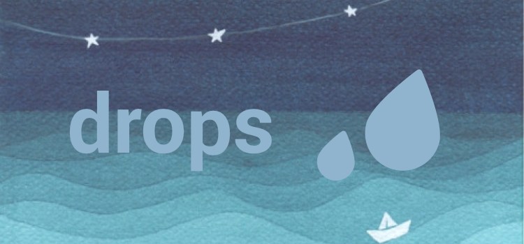
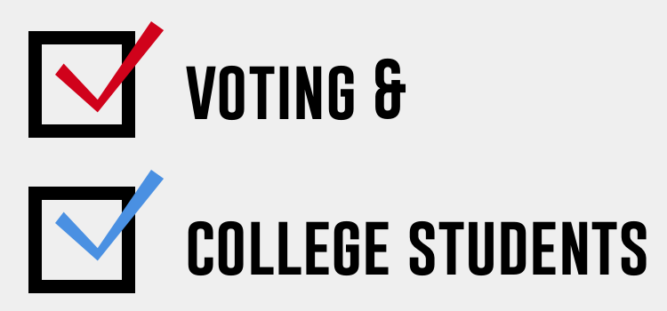
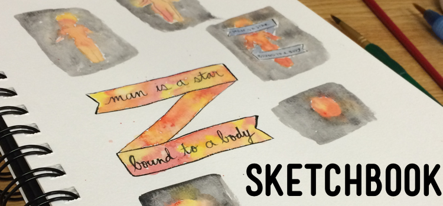

mk
work
about
2017
Mobile-responsive media layouts for an educational app.
2017
Website redesign for Graduate Women in Computing at UCSD.

2016
Interactive prototype for a playlist-centered music app.
2016
Prototype for a book-based social app.

2016
Tackling the issue of college voter turnout with the design process.

2014 – 2017
Personal illustration projects.